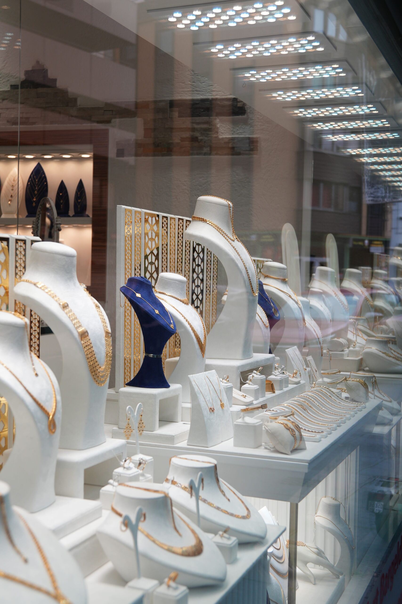
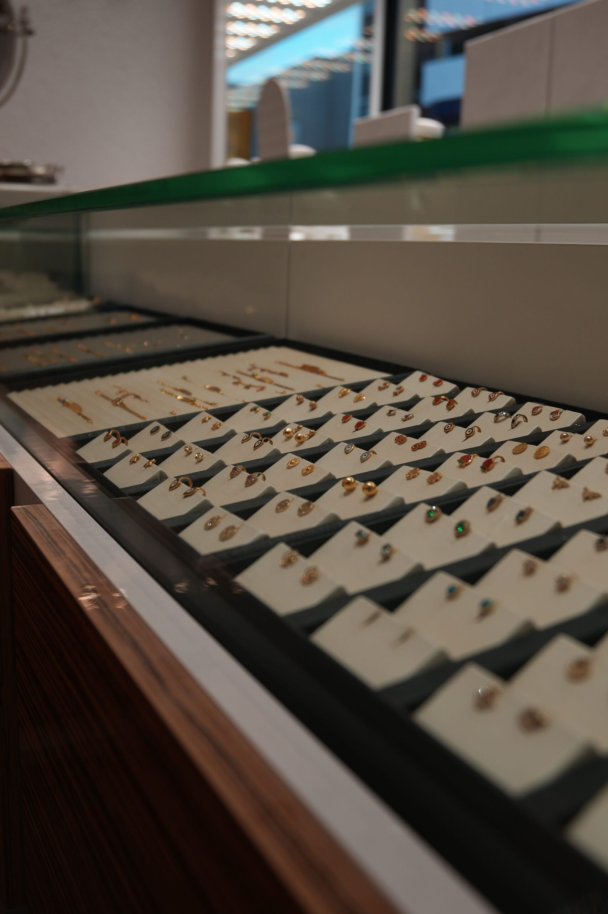
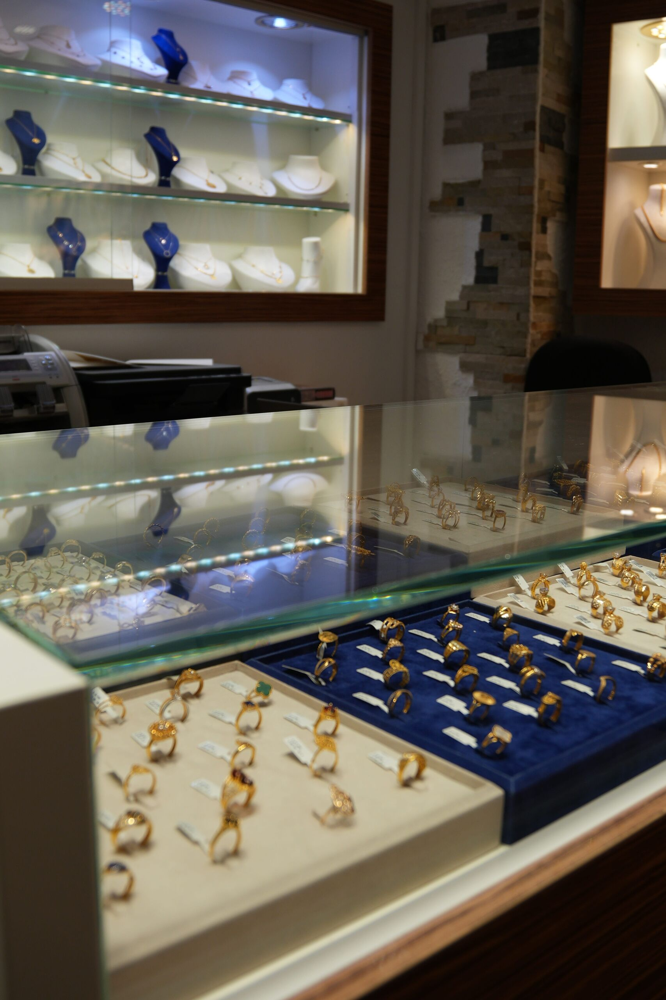
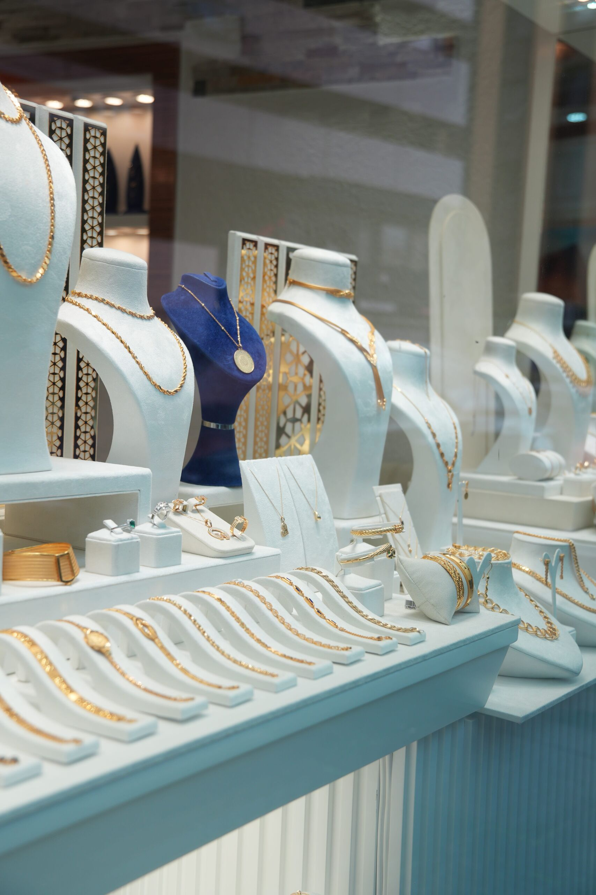
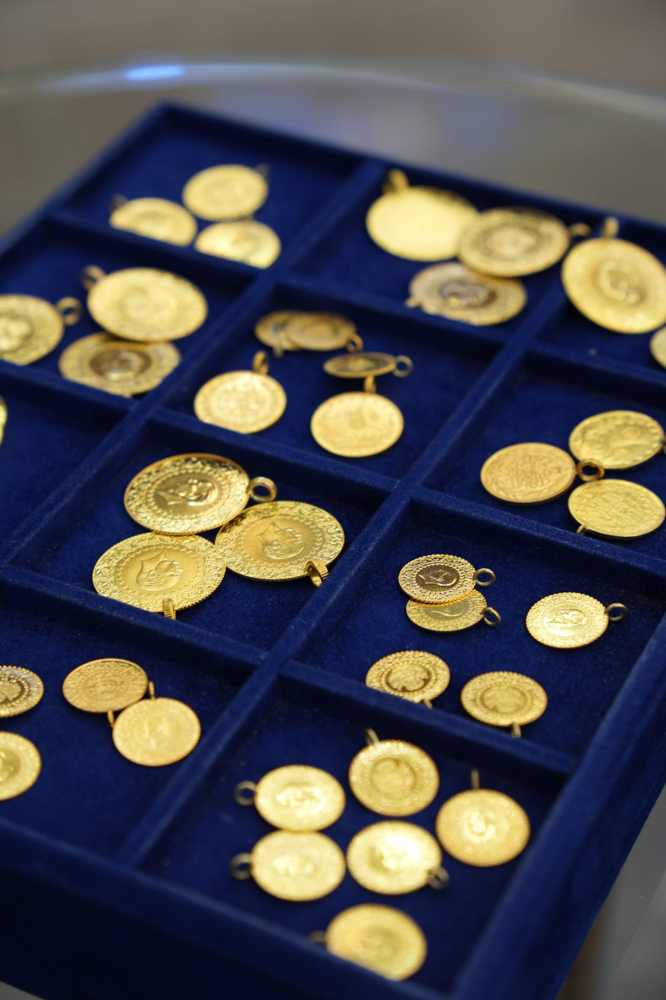
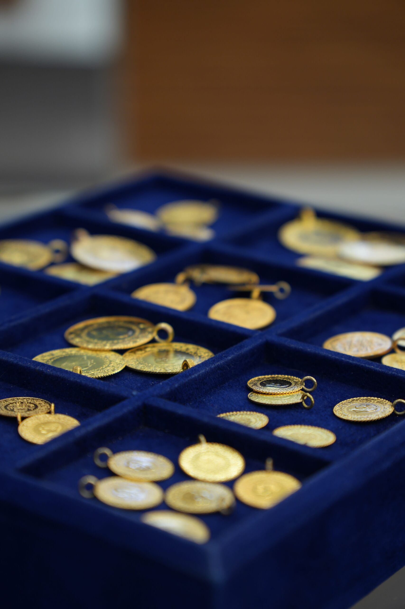

← Zurück zum Portfolio
PRODUCT &


PRODUCT &
COMMERCIAL
VISUAL BRANDING
Hochwertige Produktfotografie für Websites, Online-Shops und digitale Markenpräsenz – ästhetisch, aufmerksamkeitsstark und markenwirksam.






SOCIAL & UGC CONTENT
Werbevideos, Social-Media-Ads und UGC-Content für Produkte und Brands – produziert für Instagram, TikTok, Google-Anzeigen und moderne digitale Markenpräsenz.